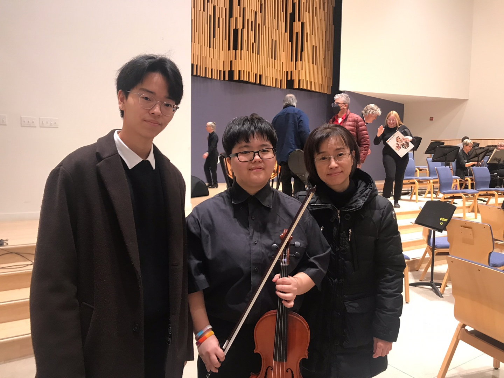

My Journey of Learning Music
My experience with music is slightly different than that of many people. I have perfect pitch, which means I can identify musical notes without referencing other already-known notes. As a child, I did not realize what I had was perfect pitch until other pianist friends mentioned that my experience with music was atypical. I still remember asking them, “When you listen to music, don’t you hear every note by its name?” I used to hate listening to an orchestra playing because it was extremely overwhelming, with too many layers of notes. For this reason, I always prefer listening to a soloist playing without any accompaniment. As a neurodivergent person, playing classical music has always been a “special interest” for me. Classical music has been a way to express myself when I did not have words to describe what I was going through. The piano and the viola are the most significant instruments out of all the other instruments I can play. I call the piano my parent instrument and the viola my lover.
Learning How to Play the Viola as an Adult
When I was living at a youth shelter, one agency kindly supported me to learn a musical instrument. I really needed a fresh start with music because I knew that I still had so much love and passion for classical music deep inside my heart. I asked if I could learn how to play the viola (in the violin family), and they made it happen for me. I was 19 when I started playing the viola. They got me a viola and an amazing musician, Rachael, as my viola teacher. I first shared my musical training background with Rachael, and that I wanted to be really careful with viola lessons so I could actually enjoy playing the instrument without re-traumatizing. Rachael was so amazing, and she helped me restore my love for classical music back. I practiced everyday for an hour at the basement of the shelter I lived in. It really kept me alive through the darkest days of my life. I learned so much about myself internally while practicing the viola because it helped me name the emotions I was feeling through the language of music. Viola music has its own clef, alto clef, so I had to learn how to read music again in a new clef. Rachael did not notice that I could not read alto clef until we finished our first book together because of my perfect pitch. I would just hear Rachael playing the piece, and I was able to repeat it on my instrument. As soon as Rachael found out I was doing that, she stopped playing for me so I actually had to read music. Learning a musical instrument as an adult was so different from learning piano as a child. I had all the music theory in my head as an adult but I was not able to naturally execute that knowledge well compared to children.

Now, I have been playing the viola for 3+ years. I performed as a member of the UWaterloo orchestra, as a member in chamber ensembles, and as a viola solo at many events. I love sharing music with others, especially when we play together. Being in a quartet was a very unique experience for viola playing pianist like myself because I get to breathe music with other instruments similar to mine, which is rare for a pianist.
Learning How to Play the Piano as a Child
I started learning the piano at age 4. My mother was different from typical Asian parents. She had never asked or forced either of her children to study. However, there were three things that she considered important: playing an instrument, reading books, and physical exercise (I will probably raise my children in this way as well, if I decide to become a parent). She put me into a music school to learn piano. I learned piano very quickly, and soon after that, I found myself being professionally trained to become a concert pianist. I was asked to not leave the small practice room I was being trained in even at meal times. Finger foods were delivered to me as meals so I could eat at the same time as I was practicing. I spent so many hours in that small box/room - that was the entire world for me. At age 9, my mom found me another piano teacher who would come to my house to teach, so I was finally able to leave that music school with the small practice room. I studied with the new teacher for 2 years after that, until I realized I actually hated playing the piano in the way I had been and was brave enough to tell my mom about it. She allowed me to quit right after, and that was such a relief. Trauma from this intensive classical training period (up to age 11) was so deep, and it left a permanent damage to my musical life. I refused to go near a piano for years after that.